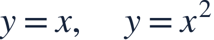
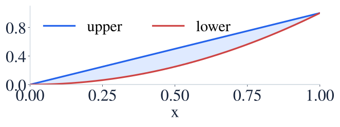
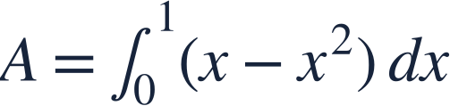
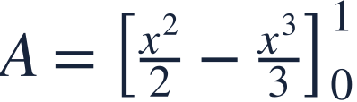
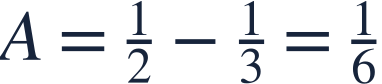
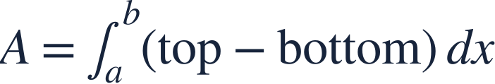
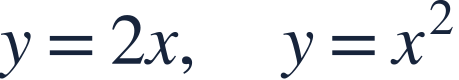

Area with vertical slices
세로 단면의 넓이

Vertical slices measure area with upper height minus lower height.
세로 단면에서는 위쪽 높이에서 아래쪽 높이를 빼서 넓이를 구합니다.

Vertical slices measure area with upper height minus lower height.
세로 단면에서는 위쪽 높이에서 아래쪽 높이를 빼서 넓이를 구합니다.
Find intersections and determine which curve is higher between them.
교점을 찾고 그 사이에서 어느 곡선이 위인지 확인하세요.

On [0,1], x≥x², so each vertical slice has height x−x².
[0,1]에서는 x≥x²이므로 각 세로 단면의 높이는 x−x²입니다.

Use top minus bottom with a horizontal width dx.
위에서 아래를 빼고 가로 폭 dx를 곱합니다.

Integrate each height term.
높이의 각 항을 적분합니다.

The answer is positive and measured in square units.
답은 양수이며 넓이 단위입니다.

If the curves switch order, split the interval or use an absolute difference.
곡선의 위아래가 바뀌면 구간을 나누거나 차의 절댓값을 사용하세요.

Find the enclosed area.
둘러싸인 영역의 넓이를 구하세요.